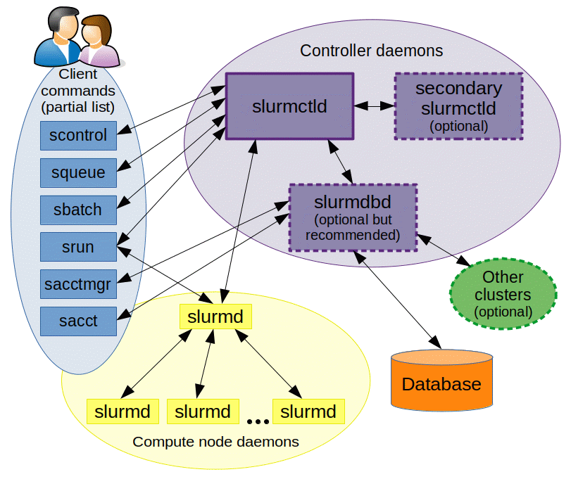
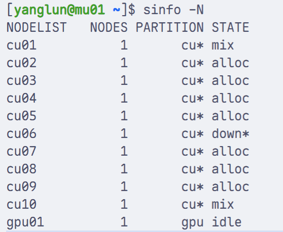
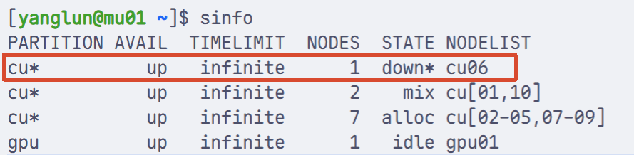
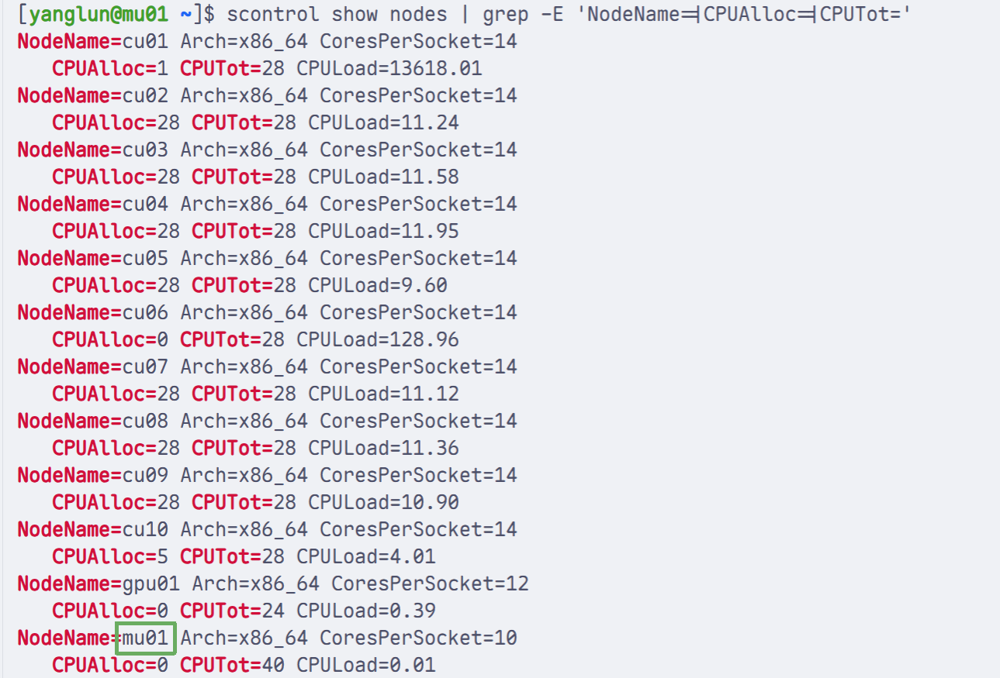
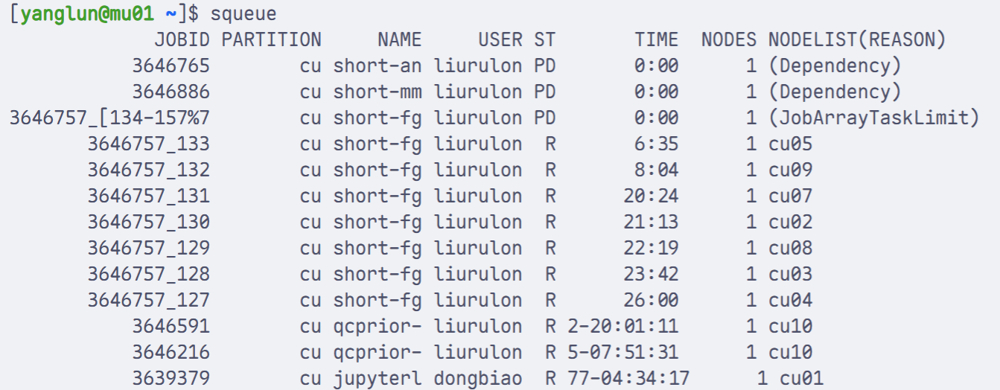
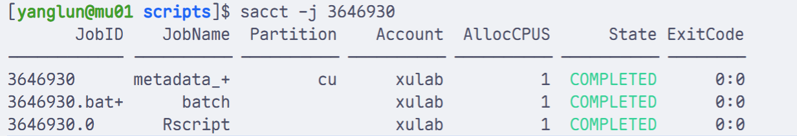
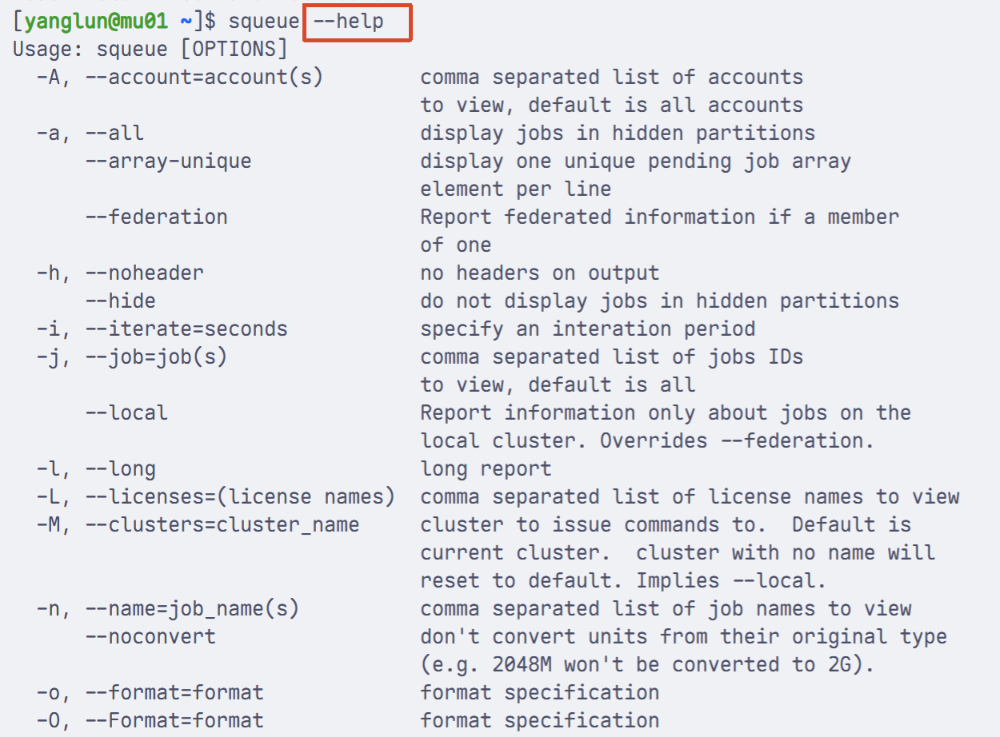

5. Slurm
1. 简介
Slurm (Simple Linux Utility for Resource Management， http://slurm.schedmd.com/ ) 是开源的、具有容错性和高度可扩展的Linux集群超级计算系统资源管理和作业调度系统。超级计算系统可利用Slurm对资源和作业进行管理，以避免相互干扰，提高运行效率。
用户工具包含 srun 运行作业、 scancel 终止排队中或运行中的作业、 sinfo 查看系统状态、 squeue 查看作业状态、 sacct 查看运行中或结束了的作业及作业步信息等命令。

来源于https://slurm.schedmd.com/quickstart.html
2. 术语
Partition：队列/分区。用于对计算节点、作业并行规模、作业时长、用户等进行分组管理，以合理分配资源
Login Node：用户登录节点，用于用户登录的节点（
mu01是登录节点）Compute Node：计算节点，运行作业计算任务的节点，需运行slurmd服务（
cu01至cu10、gpu01是计算节点）Core：CPU核心，单块CPU可以具有多个CPU核心
Job：作业/任务

3. 日常操作
3.1 查看节点状态
# 看分区和节点状态
sinfo # 查看集群状态
sinfo -N # 查看节点级信息
sinfo -N | grep idle # 查看空闲节点信息
Column | Definition |
|---|---|
PARTITION | 分区（或队列）的名称 |
AVAIL | 分区是否可用（ |
TIMELIMIT | 该分区内作业允许的最大运行时长（ |
NODES | 处于当前 |
STATE | 节点的当前状态缩写 （ |
NODELIST | 具体的节点名称列表 |
3.2 查看资源情况
# 查看详细资源信息
scontrol show nodes | grep -E 'NodeName=|CPUAlloc=|CPUTot='
前湖服务器的硬件资源情况：
资源 | 最大申请量 |
|---|---|
| 28核 (per Node) × 10 Nodes (cu01-cu10)= 280核 |
| 一张；gpu01 |
3.3 提交任务
sbatch命令：提交后立即返回终端，作业在后台排队。适合长时间、正式的批量计算。
.sh 或 .slurm是常用和标准的 Slurm 作业脚本扩展名（注意，.script等文件扩展名在功能上是与.sh 或 .slurm完全等同的，Slurm 并不依赖扩展名来解析或运行你的作业脚本）。
# 提交任务
sbatch job_script.slurm3.4 取消任务
# 取消单个任务
scancel <jobid>如果一次性取消了大量运行中的任务，计算节点可能会因为来不及清理而产生僵尸进程。稳妥的做法是先停排队中的（PD），再分批停运行中的（R）。
# 稳妥一点：先停 pending，再停 running
# 取消 pending 状态的任务（可以一起取消）
squeue -h -j <jobid> -t PD -o "%i" | xargs -r -n 20 scancel
# 取消 running 状态的任务：每次取消3个，隔一分钟，给节点留出清理时间
squeue -h -j <jobid> -t R -o "%i" | head -n 3 | xargs -r scancel
sleep 60
squeue -h -j <jobid> -t R -o "%i" | head -n 3 | xargs -r scancel或取消自己的全部任务：
# 取消自己的所有任务
scancel -u $USER3.5 查看任务状态
3.5.1 任务管理：squeue
# 查看所有任务
squeue
# 查看所有任务的详细信息
squeue -l
# 查看自己任务
squeue -u $USER
Column | Definition |
|---|---|
JOBID | 作业的ID |
PARTITION | 分配给作业的分区 |
NAME | 用户设置的作业名称 |
USER | 提交作业的用户名 |
ST | 作业状态，（PD：Pending 排队；R：Running 运行中； CG：Completing 即将完成；F：Failed 失败） |
TIME | 作业的运行时长（格式：days-hours:minutes:seconds） |
NODES | 作业的运行节点数 |
NODELIST(REASON) | 作业的运行节点（或未运行的原因） |
3.5.2 任务管理：scontrol
squeue 只能看队列摘要，如果你想查看某个作业为什么一直排队（PD）、它被分配到了具体哪台节点、工作目录在哪，就需要用 scontrol。
命令 | 作用 |
|---|---|
| 查看作业的详细信息（包含分配的具体节点/工作目录/环境变量等） |
| 挂起排队中的作业（不取消，保留位置） |
| 恢复被挂起的作业 |
| 让作业重新排队（可用于作业跑完后重跑） |
3.6 查看资源消耗
命令 | 适用状态 | 典型用途 |
|---|---|---|
| 仅运行中的作业 | 实时查看当前作业的CPU、内存（MaxRSS）等资源使用情况 |
| 运行中或已结束的作业 | 查询历史记录，作业结束后用退出码、峰值内存进行审计 |
# 实时查看当前作业的CPU、内存等资源使用情况
sstat -j <jobid> --format=JobID,MaxRSS,AveCPU# 查看指定作业的基本记账信息
sacct -j <jobid>
# 自定义输出列，查看退出码、实际耗时和峰值内存
sacct -j <jobid> --format=JobID,JobName,State,ExitCode,Elapsed,MaxRSS
# 如果想知道作业在队列里等了多久
sacct -j <jobid> --format=JobID,Submit,Start,End,Elapsed
# 查看自己从某天开始的所有作业记录
sacct -u $USER --starttime=2026-11-01sacct查询的是Slurm的记账数据库，可以查看已结束作业的退出码、实际耗时、峰值内存、CPU使用等。

MaxRSS（峰值常驻内存）对于调优--mem申请量特别有用：如果MaxRSS远低于你申请的--mem，下次可以适当调低，提高排队优先级。
4. slurm脚本的编写
从性能和管理角度出发，建议将相关任务合并为一个多步骤的 Slurm 作业。原因在于，Slurm 调度多个步骤所消耗的资源远低于分别管理多个独立作业。
通常，一个标准的 Slurm 脚本可划分为两个区域：
Header区：负责设置所需的计算资源配置（如节点、时间、内存等）。
Command区：包含实际需要执行的计算命令。
4.1 Header区
SLURM 脚本包含带有 #SBATCH 的 Header区，其中，Short Form 和 Long Form 类型任选一种使用。
Short Form：使用单连字符，后跟值，无需等号。例如：-N 4
Long Form：使用双连字符，后跟单词（单词间加连字符），且必须使用等号。例如：--nodes=4
Short Form | Long Form | 英文术语解读 | 功能说明 |
|---|---|---|---|
-J | --job-name | Job Name | 为作业命名 |
-p | --partition | Partition | 指定分区/队列 |
-N | --nodes | Number of Nodes | 申请的节点数量 |
-n | --ntasks | Number of Tasks | 申请的作业数量 |
-c | --cpus-per-task | CPUs per Task | 为每个作业分配的CPU核心数量 |
--mem | Memory per Node | 为每个节点申请的内存资源（可选） | |
-a | --array | Job Array | 提交作业数组，用于批量处理（可选） |
-t | --time | Time Limit | 作业最长运行时间，超时会终止（可选） 10-00:00:00代表10天-0小时:0分钟:0秒 |
-o | --output | Output File | 指定输出（.out）日志路径 |
-e | --error | Error File | 指定错误（.err）日志路径 |
--exclude=cu01 | Excluded Node | 排除在某些节点上运行作业 | |
--nodelist | Node List | 指定作业运行在特定的节点（可选） | |
--ntasks-per-node | Tasks per Node | 指定每个节点上运行的作业数（可选） | |
--mail-user | Email Address | 指定接收通知的邮箱地址（可选） | |
--mail-type | Notification Events | 指定接收邮件的时机（如 BEGIN, END, FAIL, ALL）（可选） | |
--gpus | GPUs | 申请GPU资源（可选） | |
--gpus-per-node=1 / --gpus-per-task=1 | GPUs per Node / GPUs per Task | 为每个节点申请指定数量的GPU / 为每个作业申请指定数量的GPU（可选） |
提示：
--exclude=cu01这个命令必须设置在你的slurm脚本中！不在cu01上跑任务！如果申请 GPU 时
--gpus系列选项报错（提示不支持），说明你所在的集群没有启用select/cons_tres插件。此时可回退使用更通用的底层写法：--gres=gpu:1（申请1张GPU）。
4.1.1 单个任务
Long Form
#!/bin/bash
#SBATCH --job-name=my_single_job
#SBATCH --partition=cu
#SBATCH --nodes=1
#SBATCH --ntasks=1
#SBATCH --cpus-per-task=1
#SBATCH --mem=4G
#SBATCH --time=1-01:00:00
#SBATCH --output=%x_%j.out
#SBATCH --error=%x_%j.err
#SBATCH --exclude=cu01
# ---- 以下为实际执行命令 ----
echo "Job ID: $SLURM_JOB_ID"
echo "Running on node: $(hostname)"
echo "Job started at $(date)"
# 运行单线程程序
python my_script.py
echo "Job finished at $(date)"Short Form
#!/bin/bash
#SBATCH -J my_single_job
#SBATCH -p cu
#SBATCH -N 1
#SBATCH -n 1
#SBATCH -c 1
#SBATCH --mem=4G
#SBATCH -t 1-01:00:00
#SBATCH -o %x_%j.out
#SBATCH -e %x_%j.err
#SBATCH --exclude=cu01
# ---- 以下为实际执行命令 ----
echo "Job ID: $SLURM_JOB_ID"
echo "Running on node: $(hostname)"
python my_script.py4.1.2 数组任务
作业数组是一种高效的管理机制，适用于处理那些具有相同资源需求的批量作业。
1. 灵活控制任务数量和并发数
限制并发：常用
%限制同时运行的任务数。比如#SBATCH --array=1-100%10：提交100个任务，但最多同时运行10个，其余排队等待。非连续索引与步长：如果你只想跑指定的几个任务，可以用逗号：
--array=1,3,5,7。如果想按步长跑，可以用冒号：--array=1-10:2（跑1,3,5,7,9）。
2. 数组任务的专属辅助变量
除了常用的 $SLURM_ARRAY_TASK_ID，系统还提供：
$SLURM_ARRAY_TASK_COUNT：数组的总任务数$SLURM_ARRAY_TASK_MIN/MAX：数组的最小/最大索引值
Long Form
#!/bin/bash
#SBATCH --job-name=my_array_job
#SBATCH --partition=cu
#SBATCH --nodes=1
#SBATCH --ntasks=1
#SBATCH --cpus-per-task=1
#SBATCH --mem=4G
#SBATCH --array=1-100%10
#SBATCH --time=1-01:00:00
#SBATCH --output=%x_%A_%a.out
#SBATCH --error=%x_%A_%a.err
#SBATCH --exclude=cu01
# ---- 以下为实际执行命令 ----
echo "Array Job ID: $SLURM_ARRAY_JOB_ID"
echo "Array Task ID: $SLURM_ARRAY_TASK_ID"
# 用 $SLURM_ARRAY_TASK_ID 区分不同子任务
INPUT_FILE="input_${SLURM_ARRAY_TASK_ID}.txt"
python my_script.py --input "$INPUT_FILE"Short Form
#!/bin/bash
#SBATCH -J my_array_job
#SBATCH -p cu
#SBATCH -N 1
#SBATCH -n 1
#SBATCH -c 1
#SBATCH --mem=4G
#SBATCH -a 1-100%10
#SBATCH -t 1-01:00:00
#SBATCH -o %x_%A_%a.out
#SBATCH -e %x_%A_%a.err
#SBATCH --exclude=cu01
# ---- 以下为实际执行命令 ----
echo "Array Job ID: $SLURM_ARRAY_JOB_ID"
echo "Array Task ID: $SLURM_ARRAY_TASK_ID"
INPUT_FILE="input_${SLURM_ARRAY_TASK_ID}.txt"
python my_script.py --input "$INPUT_FILE"4.2 Command区
4.2.1 Command区的编写规范
资源指令全放顶部
Slurm 仅解析脚本首个执行命令之前的资源申请行。开始运行代码后，再写资源申请会被当作普通注释忽略，所有配置必须集中在最前。
运行核心程序用 srun
直接运行程序系统只能看到黑盒；加上
srun后，进程会被注册为“作业步骤”，系统才能精确追踪资源消耗，并在取消作业时干净地杀掉所有子进程。警惕“假成功”陷阱
Slurm 仅凭脚本最后一条命令的返回值（0为成功）判定作业状态。如果核心程序报错，但你后面加了一句普通的
echo打印（返回0），系统会误判作业成功。确认激活正确的环境
集群通常同时存在公用环境和个人环境。激活环境必须在运行代码前完成。为防止路径冲突，建议用绝对路径或 hook 方式激活自己的环境，并打印一次环境路径（如
which R）来确认绝对没调错。理清内存申请与多线程程序的联动
内存怎么算：
--mem=30G指的是每个节点的总内存；而--mem-per-cpu=4G指的是每个 CPU 核心分配 4G（若申请 16 核，则单节点总内存为 64G）。在单节点多核任务中，如果用-c 24且--mem=30G，平均每核只有 1.25G，内存密集型程序极易 OOM（内存溢出）崩溃。多线程怎么开：你申请了
-c 16（16个核），并不代表你的程序（如 OpenMP、R 的data.table）会自动跑满 16 线程。必须在 Command 区手动导出环境变量告诉程序可用核数：
export OMP_NUM_THREADS=${SLURM_CPUS_PER_TASK}这能确保程序申请多少核就用多少核，避免“占着资源不干活”的浪费。
日志文件统一归置
为避免污染工作目录，建议将
.out和.err日志统一放到特定文件夹，并在 Command 区确保目录存在。推荐两种规范：slurm日志文件建议统一放到：slurm_logs文件夹 或logs文件夹：
方式 | 日志规范 |
|---|---|
① | /home/$USER/slurm_logs/<job_name>/<jobid>.out 和 <jobid>.err |
② | /home/$USER/<job_name>/logs/<jobid>.out 和<jobid>.err |
4.2.2 单任务slurm脚本示例
示例一：申请1个CPU核心，为每个节点申请30G内存，调用自己的conda环境。由于是单核单线程任务，无需设置多线程环境变量。
#!/bin/bash
#SBATCH -J metadata_csv_merge
#SBATCH -p cu
#SBATCH -N 1
#SBATCH -n 1
#SBATCH --mem=30G
#SBATCH -t 1-24:00:00
#SBATCH -o logs/metadata_csv_merge_%j.out
#SBATCH -e logs/metadata_csv_merge_%j.err
#SBATCH --exclude=cu01
# 0. 确保日志文件夹存在（防止因目录不存在导致作业失败）
mkdir -p logs
# 1. 环境准备
eval "$(/home/yanglun/miniconda3/bin/conda shell.bash hook)"
conda activate r-env
# 2. 调试日志
echo "Running on node: $(hostname)"
echo "Start time: $(date)"
echo "R environment: $(which R)"
# 3. 核心计算：使用 srun 启动
srun Rscript metadata_csv_merge.R
EXIT_CODE=$?
# 4. 收尾与退出码传递（确保 Slurm 准确捕获作业真实状态）
echo "End time: $(date), Exit Code: $EXIT_CODE"
exit $EXIT_CODE示例二：申请 4 个 CPU 核心，为每个核心分配 8G 内存（总计 32G），调用公用的 Conda 环境。由于是多核任务，需要声明多线程环境变量以充分利用 CPU 资源。
#!/bin/bash
#SBATCH -J metadata_csv_merge
#SBATCH -N 1
#SBATCH -n 1
#SBATCH -c 4
#SBATCH --mem-per-cpu=8G
#SBATCH -p cu
#SBATCH -t 1-24:00:00
#SBATCH -o logs/metadata_csv_merge_%j.out
#SBATCH -e logs/metadata_csv_merge_%j.err
#SBATCH --exclude=cu01
# 0. 确保日志文件夹存在（防止因目录不存在导致作业失败）
mkdir -p logs
# 1. 环境准备
module load miniconda/4.9.2
source activate renv
# 2. 多线程环境声明（让程序充分利用分配的 4 个核）
export OMP_NUM_THREADS=${SLURM_CPUS_PER_TASK}
# 3. 调试日志
echo "Running on node: $(hostname)"
echo "Start time: $(date)"
echo "R environment: $(which R)"
echo "Allocated CPUs: $SLURM_CPUS_PER_TASK"
# 4. 核心计算：使用 srun 启动
srun Rscript metadata_csv_merge.R
EXIT_CODE=$?
# 5. 收尾与退出码传递（确保 Slurm 准确捕获作业真实状态）
echo "End time: $(date), Exit Code: $EXIT_CODE"
exit $EXIT_CODE注：服务器上调用Conda环境有多种方式：公用环境、自己或他人环境。
调用方式 | 调用命令 |
|---|---|
公用环境 | module load miniconda/4.9.2 source activate ENV_NAME |
自己/他人环境 | eval "$(/home/$USER/miniconda3/bin/conda shell.bash hook)" |
4.2.3 环境变量与数组任务
当需要批量处理大量相似任务时，数组任务（Job Array）是最佳选择。而在脚本内部，Slurm 提供了丰富的内置环境变量来辅助我们动态生成路径、分配资源。
以下是脚本内部可直接调用的环境变量：
环境变量 | 英文术语解读 |
|---|---|
| 作业ID |
| 提交作业时用户所在的工作目录 （脚本中 |
| 作业名称 |
| 分配的节点数 |
| 分配的任务总数 |
| 每个任务的CPU核数 |
| 数组作业的主ID / 当前子任务索引 |
4.2.4 数组任务slurm脚本示例
以下是示例：
#!/bin/bash
#SBATCH --job-name=dada2_array
#SBATCH -N 1
#SBATCH -n 1
#SBATCH -c 24
#SBATCH --array=1-6
#SBATCH -o logs/%x_%A_%a.out
# 1. 打印所有核心环境变量，用于调试
echo "作业名: $SLURM_JOB_NAME | 作业ID: $SLURM_JOB_ID (或 $SLURM_JOBID)"
echo "分配节点: $SLURM_NNODES | 任务总数: $SLURM_NTASKS | 每任务CPU: $SLURM_CPUS_PER_TASK"
echo "数组主ID: $SLURM_ARRAY_JOB_ID | 当前子任务: $SLURM_ARRAY_TASK_ID"
echo "提交目录: $SLURM_SUBMIT_DIR"
# 2. 切换到提交作业时的目录，确保相对路径有效
cd "$SLURM_SUBMIT_DIR"
# 3. 利用数组索引提取当前任务的数据
study_id=$(sed -n "${SLURM_ARRAY_TASK_ID}p" study_id_add.txt)
echo "当前处理项目: ${study_id}"
# 4. 动态利用环境变量构建输出目录，避免冲突
WORK_DIR="results/${SLURM_JOB_NAME}_${SLURM_ARRAY_JOB_ID}_task${SLURM_ARRAY_TASK_ID}"
mkdir -p "$WORK_DIR"
# 5. 核心计算（利用 $SLURM_CPUS_PER_TASK 动态分配并行数）
# 假设 parallel 需要指定并发数
cat samples.txt | parallel -j ${SLURM_CPUS_PER_TASK} "fastq-dump {}"
# 6. 运行最终脚本（使用 srun 启动，传递真实报错码）
srun Rscript dada2_analysis.r "$study_id" "$WORK_DIR" || exit $?4.3 Output
提交作业后生成的 .out 文件，不仅是系统的输出记录，更是排查错误、确认数据质量的唯一凭证。
今天以metadata_csv_merge这个slurm作业为例：
4.3.1 查环境（看开头）
Running on node: cu02
Start time: Mon Nov 16 23:11:24 CST 2026
R environment: /home/yanglun/miniconda3/envs/r-env/bin/R节点与时间：任务跑在
cu02节点，启动时间一目了然。环境路径：看到绝对路径是
.../r-env/bin/R，说明完美调用了你的专属环境，没被公用环境干扰。
4.3.2 观业务（看中间）
================ Merge Report ================
Execution Time: 2026-11-16 23:11:52.021518
Total subdirectories checked: 345
Successfully merged metadata_v2.csv files: 334
[1. Subdirectories missing metadata_v2.csv]
- PRJDB12444
...
- PRJNA804331
[2. Files missing required columns]
None. All read files contain the 19 required columns. 执行效率：核心计算不到 30 秒完成。
数据对账：检查 345 个，成功 334 个。
容错设计：缺失的 11 个文件夹，脚本没有直接崩溃，而是跳过并在最后列出名单，这种“容错并报告”是数据处理的黄金标准。
质量校验：确认所有文件均包含要求的 19 列，数据干净。
4.3.3 定成败（看末尾）
Merge complete! Data saved to: /home/yanglun/YSD/.../metadata-v2-merge.csv
Report saved to: /home/yanglun/YSD/.../merge_report.txt
End time: Mon Nov 16 23:11:52 CST 2026, Exit Code: 0结果路径：直接去该路径拿合并好的文件。
Exit Code: 0：最安心的一行。这是判定成功的唯一依据。结合脚本末尾的
exit $EXIT_CODE，证明真实运行成功，没有发生“假成功”。
5. 其它
5.1 帮助文档
在具体命令后，加上--help即可查看该命令的简要说明。

5.2 作业依赖
核心用法是--dependency=条件:作业ID。最常用的几种条件：
依赖条件 | 含义 |
|---|---|
| 前置作业成功退出（exit code 0） 后才启动 |
| 前置作业无论成功、失败还是被取消，结束后都启动 |
| 前置作业失败后才启动（常用于错误处理分支） |
# 先提交第一个作业
JOB1=$(sbatch --parsable step1.sh)
# 第二个作业在JOB1成功后才运行
sbatch --dependency=afterok:${JOB1} step2.sh这个机制可以替代“手动等上一个跑完再提交下一个”的做法，尤其适合多步骤的数据处理流水线。
5.3 交互式作业
srun（交互式，不常用）：在登录节点直接运行srun会阻塞终端，直到任务执行完毕。千万不要在登录节点直接跑重型计算！salloc（实时分配，不常用）：阻塞终端，直到申请到资源并在计算节点上获得一个交互式 shell。适合需要申请特定资源后，自己手动分步执行srun命令的调试场景。
Reference
https://scc.ustc.edu.cn/hmli/doc/userguide/slurm-userguide.pdf
https://mjy.js.org/posts/slurm-job-submission-queue-management/